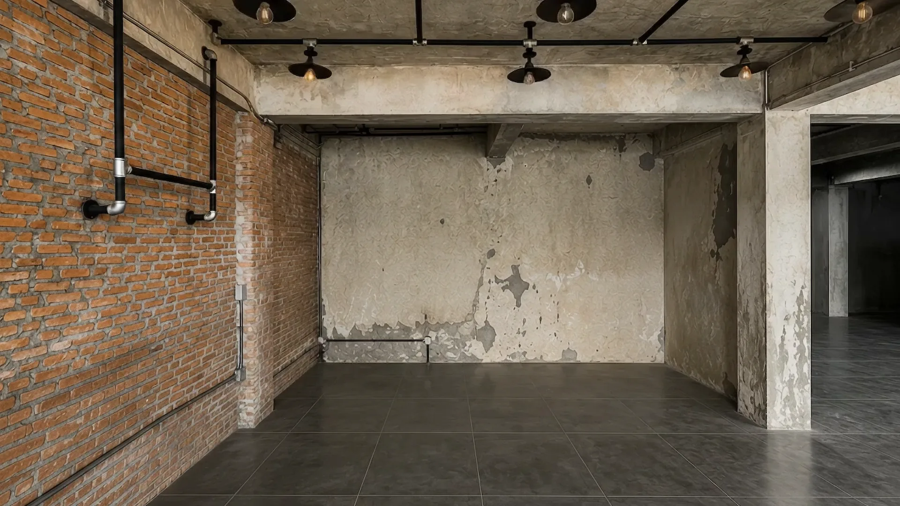

Custom Millwork,
Masterfully Crafted
We design, build and install custom cabinetry and interior millwork for homes and businesses across Toronto, pairing precise craftsmanship with practical detailing that lasts.
Explore ProjectsAt Toronto Millworks, we build custom kitchens, cabinetry, offices, restaurants and bars from the ground up. Every project is measured, milled and installed by hand so the woodwork not only looks exceptional but fits your space precisely and works beautifully for decades.
A commercial fit-out, from bare shell to finished bar


Built in our shop,
finished in your space.
Every project starts on the floor of our Toronto shop. We template from your actual walls, mill to the millimetre, and dry-fit the whole assembly before it leaves the bench. What arrives on site is finished work, not a flat pack. It is hung, scribed to the room, and left looking like the joinery grew there.
Frequently asked
What is millwork?
Millwork is woodwork made to measure for a specific building, as opposed to stock items bought off a shelf. It covers cabinetry, panelling, trim, stairs, doors and fitted furniture.
How much does custom millwork cost in Toronto?
It depends on size, material and finish. We quote from measured drawings rather than a per foot rate, so the price reflects the actual room. A painted poplar built in and a rift white oak kitchen are not comparable jobs even at the same linear footage.
How long does a custom millwork project take?
The schedule is set by four stages: site measure and drawings, approval, shop fabrication, then install. Approval is usually the stage that moves most, because it depends on how quickly finishes and hardware are decided.
Do you build in your own shop?
Yes. Everything is milled and dry fitted on our own bench before it goes to site, and the same team installs it.
Do you work on commercial projects as well as homes?
Yes. Roughly half our work is commercial, including restaurants, bars, cafes, offices and retail.
Which areas do you serve?
Toronto and the surrounding Greater Toronto Area, including North York, Etobicoke, Scarborough, Vaughan, Richmond Hill, Markham, Mississauga and Oakville.
Tell us about the room.
Send drawings, a photo or just the dimensions. We come back with a measured quote.
Start a project